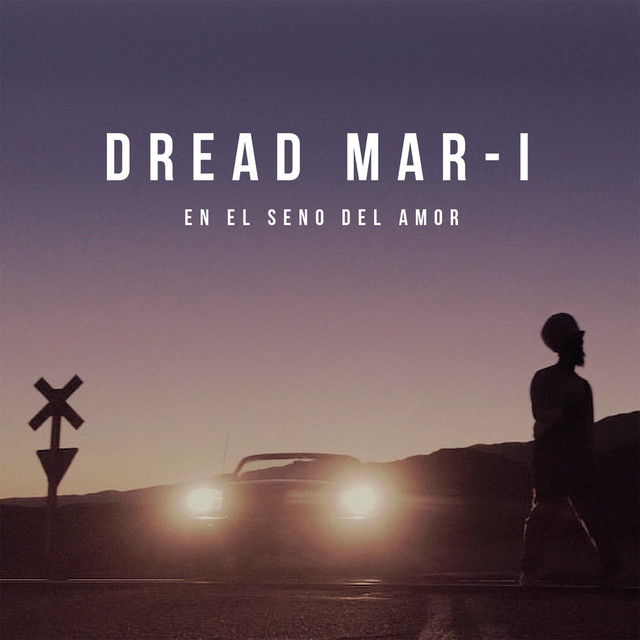
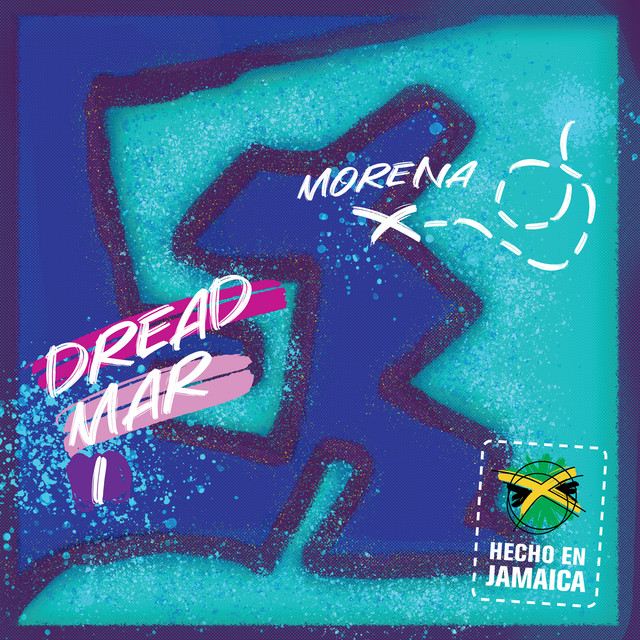
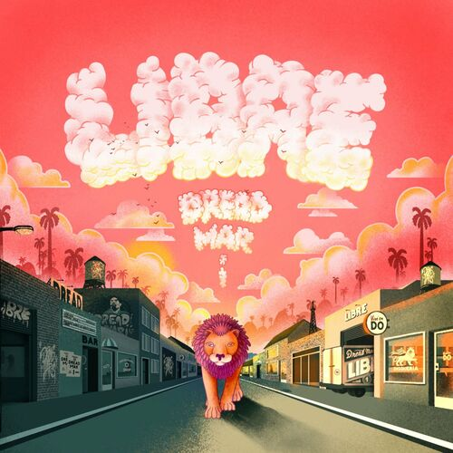
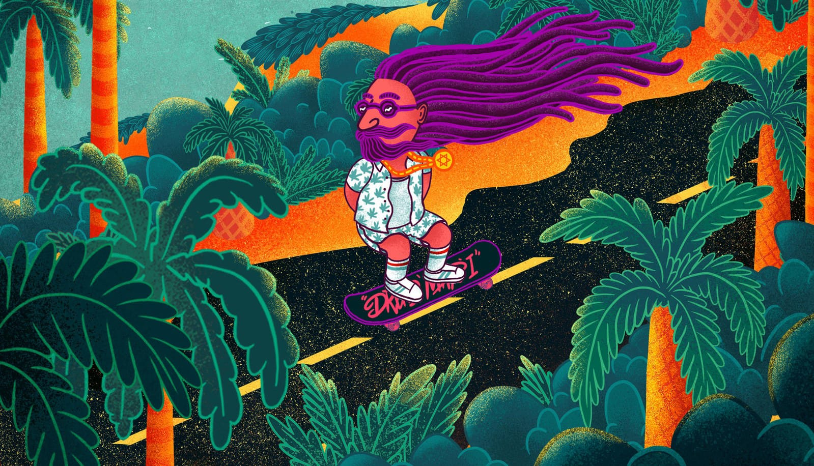
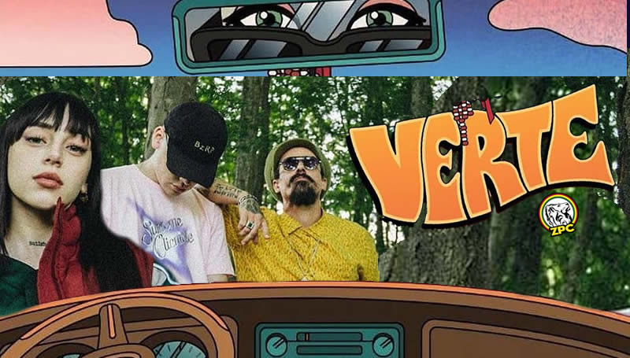
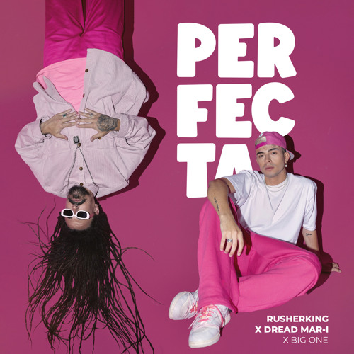
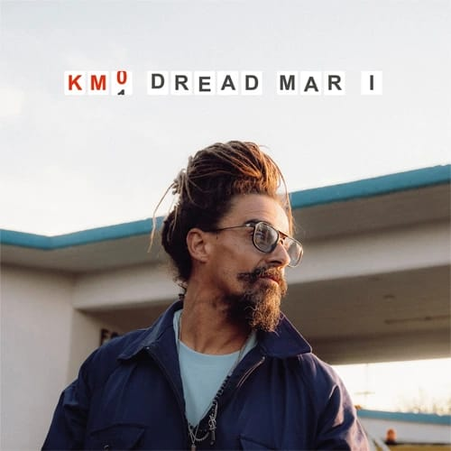

En agosto de 2019 presenta el nuevo video de la canción "En el Seno del Amor", en versión acústica. 
El 27 de enero de 2020, estrena “Morena”, adelanto de lo que será la edición del primer vinilo de su carrera. El 3 de septiembre adelanta su EP con el estreno del video de “Libre”. El 6 de noviembre presenta “Todo lo que se fue”, segundo adelanto de su EP. El 10 de diciembre, colabora con Bizarrap y Nicki Nicole para la canción “Verte”.    
El 29 de septiembre de 2022 colabora con Rusherking en su single "Perfecta". 
El 9 de junio de 2023 lanza el single "Km 0" junto con su videoclip oficial. El 21 de julio colabora con MYA en "Mya Live P3: Qué pasará". 